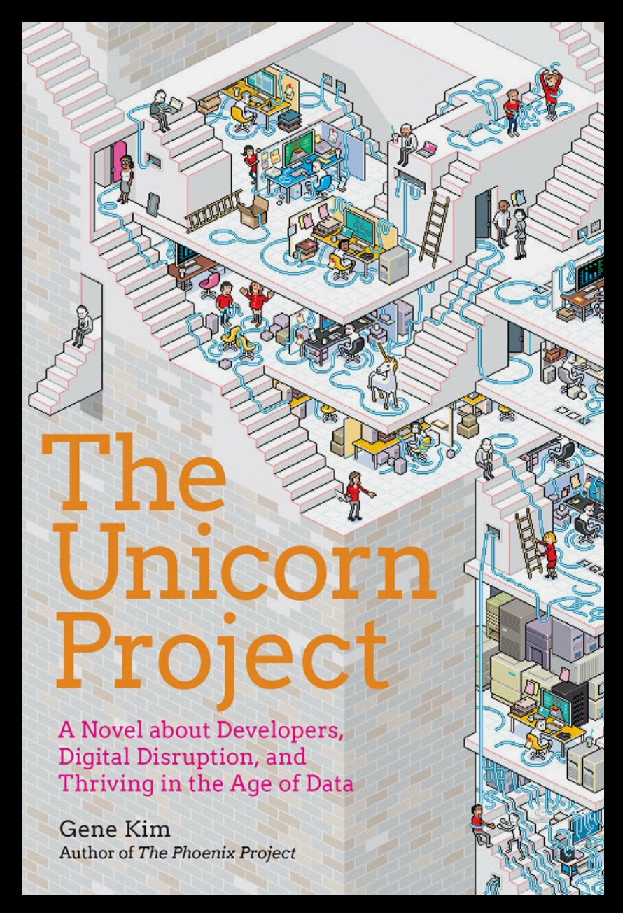

The Unicorn Project
SETTING THE STAGE:
The best and the brightest are disenchanted.
Disenchanted by a software development workspace so mired in bureaucracy,
heavyweight process, and out-of-control technology stack that no new feature
functionality can be developed in a reasonable period of time.
Disillusioned by a codebase so drowning in technical debt that it
has a stranglehold on and is killing the business that it is supposed
to be helping.
Down, but not out. Dispirited, yet still motivated, they self-organize into
a shadow organization, a rebellion, working in parallel to the established
organization (because they have to) to get things done.
Meet many of your old friends from “The Phoenix Project” in the continuing
saga of "Parts Unlimited," the fictional auto parts supplier from Phoenix.
Also meet some new friends, especially Maxine and Kurt, who with the shadow
team, seek to upend the established way of doing things.
Coalescing over drinks at the Dockside Bar, the team imagines what it would be
like if their software development organization actually worked. After
stringing together success after success through hard work and fearless
determination, the team gradually incorporates executives who are attracted
to people who fulfill commitments and enable rather than impede the business
they are serving.
There are difficulties to overcome: technological challenges, political standoffs,
old enemies are back and fighting change and protecting their turf. Watch with
excitement and a chill in your bones the rebellion take on the aging empire.
Along the way, you will learn The 5 ideals:
* Locality and simplicity
* Focus, flow, and joy
* Improvement of daily work
* Psychological safety
* Customer focus
…and Dr. Geoffrey Moore’s 3 Horizons:
* Horizon 1: Cash Cow
* Horizon 2: Nascent businesses and potential future cash cows
* Horizon 3: A culture of innovation and learning to produce the ideas for the second horizon
DISCUSSION:
In many ways “The Unicorn Project” is like “The Phoenix Project.” It is a fictional
narrative that viscerally depicts the problems of technical debt overhang, an aging
technology organization, and leaders who are stuck in the old way of doing things.
While Phoenix has a top-down approach following VP Bill Palmer as he gradually learns
the stages of DevOps mastery all the while given tantalizing hints by process guru Erik;
Unicorn has an interesting and significant twist - the changes come from the grass-roots.
The sharpest people in the company form a rebellion because they are dissatisfied
with the status quo. Maxine Chambers is shocked by how many days it takes to get a
Phoenix build going and is noticed by the rebellion and recruited.
The ever-mysterious Erik also appears in a surprising role giving Maxine and the gang
more ideas about how to take their rebellion to the next level.
CONCLUSIONS:
The rest of narrative I will not spoil for you here except to say
that these fictional books are so important because they provide a rich alternative
slant on the how-to books currently available. Instead of telling you what to do,
they show you what is wrong and how the characters experiment until they discover
the right way. You are front and center and also privy to the main character’s inner
monologue which, in the case of Maxine, is brilliant and has made me laugh out loud on
numerous occasions.
In many ways, this book, even with the challenges the characters face, depicts the best case
scenario. "Parts Unlimited" is lucky that Maxine et al did not leave the company (as she intended to
do at the start). It is the best and brightest who notice that things are not right and who are
the most motivated to change the status quo. However, they are also the most able to leave a dying
company should they find that their desire for change goes unfulfilled and their calls for help go
unheard. Without some support from leadership, these talented folks will find their way to the next
disruptive exciting company. This should be a warning to all technology leaders.
I have a few trivial questions about the $20M spent on the Phoenix project and some
of the timelines of the story. However, when all is said and done, this book is
uniquely valuable and I’m sure is destined to become a Software Engineering and
DevOps classic.
Join the rebellion and fight the good fight -- Enjoy!
10* - #MustRead #DevOpsClassic #SoftwareEngineeringMastery